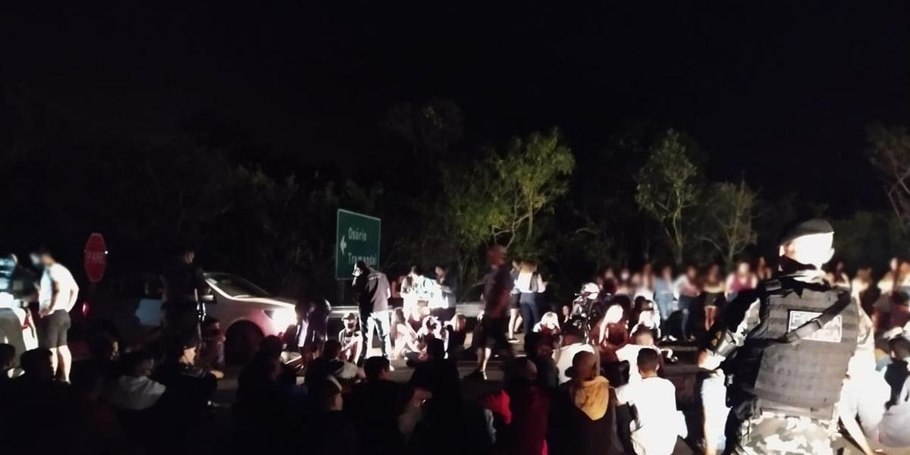
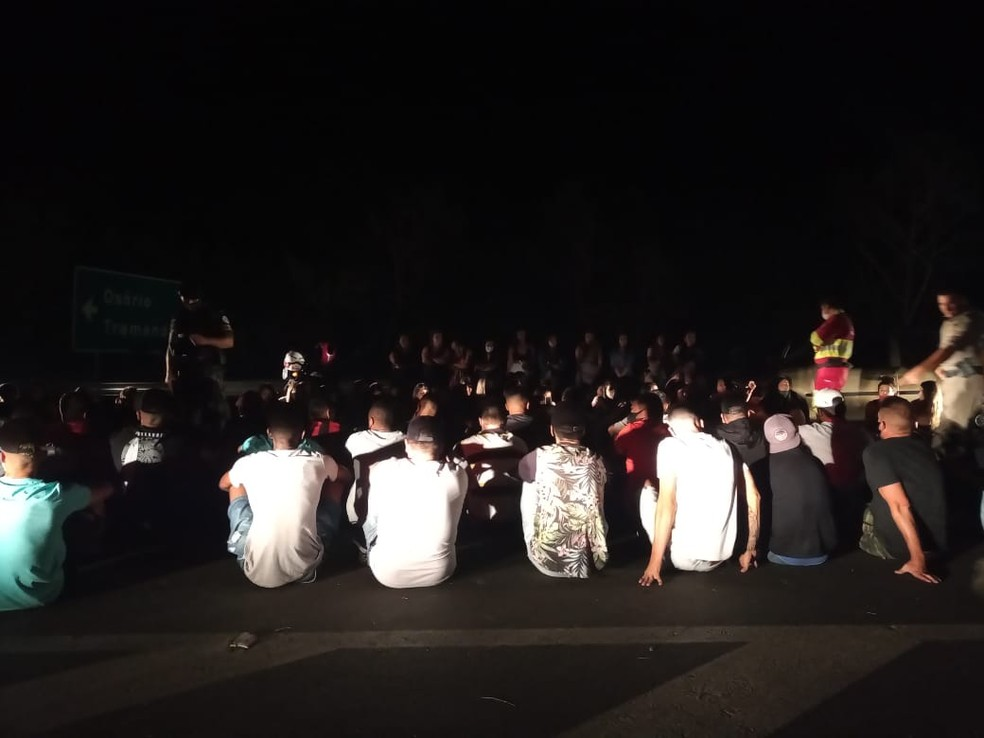

Uma festa clandestina, com mais de 100 pessoas e que ocorria junto ao viaduto de acesso da freeway (BR 290) à localidade de Chicolomã, em Santo Antônio da Patrulha, no Litoral Norte, foi interrompida na madrugada deste sábado, em ação dos policiais da 2ª Cia. da Brigada Militar da cidade e com suporte do 8º Batalhão de Polícia Militar (8º BPM) da Brigada Militar, do Comando Regional de Policiamento Ostensivo do Litoral (CRPO-Litoral), de Osório. A mobilização ocorreu após recebimento de dezenas de denúncias.
Por volta das 2 horas, quando os policiais chegaram, foram encontrados dezenas de veículos estacionados e com som alto, além de muitas bebidas alcoólicas, como whisky e cerveja. Todas as pessoas estavam sem máscaras de proteção.No local, também havia 13 adolescentes, que flagrados na aglomeração, foram acompanhados à delegacia de Polícia pelo Conselho Tutelar de Santo Antônio, onde aguardaram pelos responsáveis.
Foram elaborados ainda 29 termos circunstanciados, 14 autos de infração de trânsito e 7 carros e uma moto foram recolhidos ao depósito credenciado ao Detran. Os adultos irão ainda responderão pelo crime de infringir determinação do poder público, destinada a impedir introdução ou propagação de doença contagiosa.A ação foi em conjunto com a equipe de fiscalização da Prefeitura de Santo Antônio da Patrulha. Mais cedo, ainda na noite de sexta-feira, a BM também auxiliou em operação em Caraá, município vizinho a Santo Antônio da Patrulha.Foram fiscalizados estabelecimentos nas localidades de Rio do Meio, Rio dos Sinos, Vila Nova, Passo da Pedra, Arroio Guimarães e Centro, no Caraá. Um bar foi interditado pelos fiscais da Prefeitura e Corpo de Bombeiros, onde pessoas também não usavam máscaras de proteção.
 